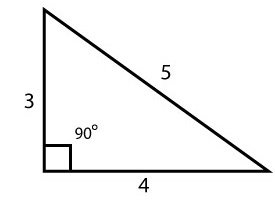
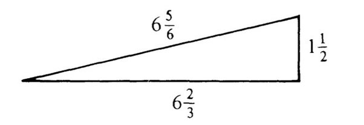
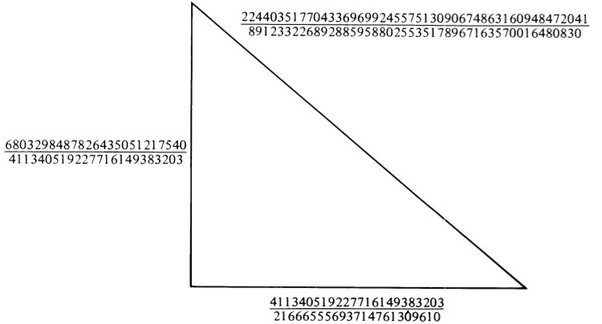
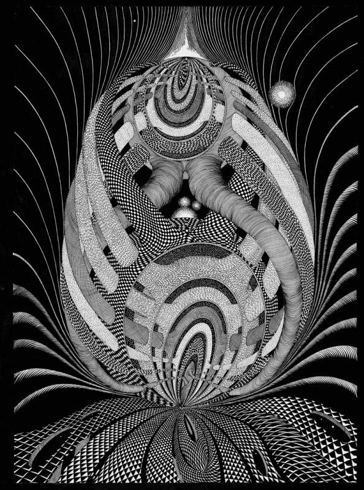

What math problem with an elementary solution was unsolved for the longest period?
Being a competitive guy, I'll offer a problem that I think stood the longest. Naturally, I'm going to stretch the meaning of "elementary solution" so much that it writhes in agony, but this is morally justified by the opportunity to talk about the difference between "recursive" and "recursively enumerable", about elliptic curves, and about Arab manuscripts from the year 972.
___________
Pick a number. Did you pick 5? Good. Now here's a question for you:
Can you find a right triangle with rational sides and area 5?
Simple question, right? A right triangle is a triangle with a right angle. "Rational sides" means that the sides have rational lengths. Here is an example of a right triangle with rational sides (in fact, integer sides, but integers qualify as rational numbers):

What is the area of this triangle? It is 6. If you had picked 6, this triangle would tell you that the answer is "Yes". But you didn't pick 6, did you. You picked 5. Is there a right triangle with rational sides and area 5?
The answer is also "Yes", but finding the right (haha) triangle isn't quite that easy. Here it is:

The sides are \frac{3}{2}, \frac{20}{3} and \frac{41}{6}. You can verify that this is indeed a right triangle by checking the well-known Pythagorean property:
\displaystyle \left(\frac{3}{2}\right)^2+\left(\frac{20}{3}\right)^2 = \left(\frac{41}{6}\right)^2.
Numbers like 5 and 6 which are areas of right triangles with rational sides are called congruent numbers. An Arab manuscript, written no later than 972 AD, asks for a way to determine if a given number is congruent (the original phrasing was a bit different, but the property is equivalent to what we just described.)
It turns out that 1, 2, 3 and 4 aren't congruent, but 5, 6 and 7 are. We can build a sequence of congruent numbers, as did the Arabs in the 10th century, and we may wonder what to make of it. What's the pattern?
Question: How can you tell if a number is congruent?
This question stood for over 1,000 years, and it is now solved (almost), and the solution is elementary (except that its proof is far from it).
If you know something about Pythagorean triplets, you may know that there's a methodical way of generating all right triangles with integer sides. Every such triangle has an integer area, and sometimes this area can be written as a times a square of b. In that case, we can divide all the lengths by b, and get a right triangle with rational sides and area a.
For example, there's a right triangle with sides 9, 40, 41 because 9^2+40^2=41^2. The area of this triangle is 180, which is 5\times 6^2. So we can divide the edges by 6 and get a triangle with area 5. This is the same triangle we just looked at.
So we can methodically generate all triangles with integer sides, and then find all the areas that each of them supports after a possible division by some common denominator. Why isn't that a suitable algorithm?
Well, the problem is that this algorithm will eventually generate all congruent numbers, but not in order. So if you're considering a particular candidate number, you have no idea how long you might need to wait for it to come up. If it comes up, great: it's congruent. If it hadn't come up yet, you don't know if you should give up (because your number isn't congruent) or you just need a little more patience.
Did I say a little? Consider the number 157. Is it congruent? We can start generating Pythagorean triplets and wait for one with an area that is 157 times a square. We generate and wait, wait and generate, and eventually we die, thinking that surely 157 isn't congruent.
But it is. And do you know what is the length of the hypotenuse of the integer triangle you'll need to discover? It is 224403517704336969924557513090674863160948472041. I'm not even kidding. This is precisely it. This number has 48 digits. You'll need to live for billions of years until your supercomputer finds it.

(This is the full rational right triangle with area 157).
The distinction between an algorithm that generates all numbers with a certain property, and an algorithm which checks if a given number has that property, is profound. It is the difference between "recursively enumerable" sequences and "recursive" or "computable" sequences. It is one of the most fundamental definitions in logic and the theory of computability.
So the question asked by the Arab scholars in 972 AD (or earlier) is simply: is the set of congruent numbers computable? And if so, what is the method to check, in a finite time, if a number is congruent or not?
The answer was (almost) found by Jerrold B. Tunnell in 1983. That's at least 1,011 years after the problem was stated. His answer is as follows:
An odd, squarefree number n is congruent if, and only if, the number of ways of writing n as 2x^2+y^2+8z^2 is twice the number of ways of writing it as 2x^2+y^2+32z^2.
Here x, y, z are integers. A similar condition is available for even numbers, and the "squarefree" part is just a technicality: the numbers n and nd^2 are either both congruent or both not, so you can always remove squares from a number.
A few comments are in order.
First, this strange statement about the number of solutions is awesome, because it can be easily checked in finite time. The point is that x^2, y^2 and z^2 are all positive, so there are only finitely many candidates to test. If we had third powers there, for example, things would have been very grim; for example, nobody knows if 114 is the sum of three cubes of integers. But with squares, it's all easy. Just test all x, y, z that lie between 0 and \sqrt{n} and you're done.
Second, we must agree that this congruency criterion is as elementary as they come. It can be checked manually by a 10-year old who understands addition and multiplication. The actual algorithm that answers the question posed in 972 is fully and completely elementary.
Third, Tunnell's statement is not yet fully proven. This is the first way I'm lying in saying that I have an example of a long-standing problem with an elementary solution: the problem is not quite solved yet. If n is congruent then we do know for sure that n satisfies the condition on the number of solutions. But the other direction, concluding that n is congruent if the condition holds, hinges on a special case of the Birch and Swinnerton-Dyer conjecture, and that conjecture, and even that special case, are unsolved to date. So Tunnell's condition may in principle turn out to be false, but this is extremely unlikely.
Finally, and this is the second way I'm lying through my teeth when I'm calling this "an elementary solution": the proof of Tunnell's theorem (the parts of it that we do know how to prove) is very, very, very far from elementary. The conclusion of the proof is elementary, but the proof itself is not.
Through a sequence of elementary transformations, the property of n being congruent can be transformed to the question of whether or not the equation y^2=x^3-n^2 x has infinitely many solutions, or in other words if the corresponding elliptic curve has positive rank. It is remarkable that this ancient problem, which on the surface has nothing to do with elliptic curves, can be very effectively reduced to a problem about elliptic curves – much like another famous old problem, Fermat's Last Theorem.
At this point, we may start applying the massive amount of knowledge we have about elliptic curves to the congruent number problem. This Tunnell did, and through a series of ingenious reductions which, at one point, rely on a famous conjecture tying the rank to a certain modular form, was able to produce the elementary condition for congruency. It also enabled Don Zagier to discover, using the method of Heegner points, the incredible triangle that has 157 as its area.
John Coates wrote a wonderful survey of the Congruent Number Problem. A more complete description of Tunnell's proof and the mathematics that went into it are in a highly recommended book by Neal Koblitz, "Introduction to Elliptic Curves and Modular Forms". You should get this book. it has this picture by Anatoly Fomenko as its frontispiece, depicting the family of elliptic curves studied by Tunnell.

So, a thousand years. Kinda. Beat that.